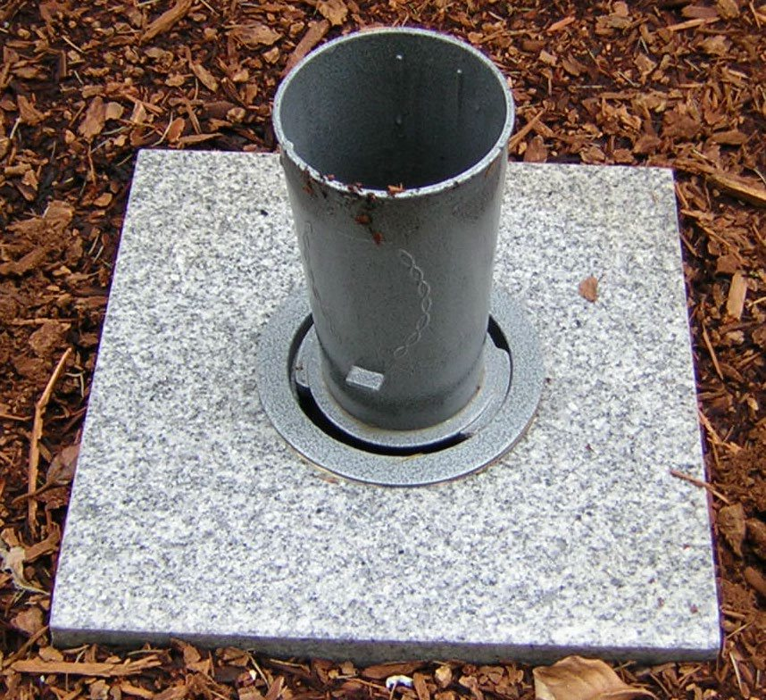
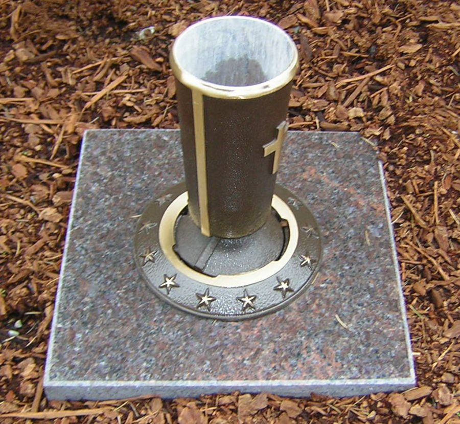
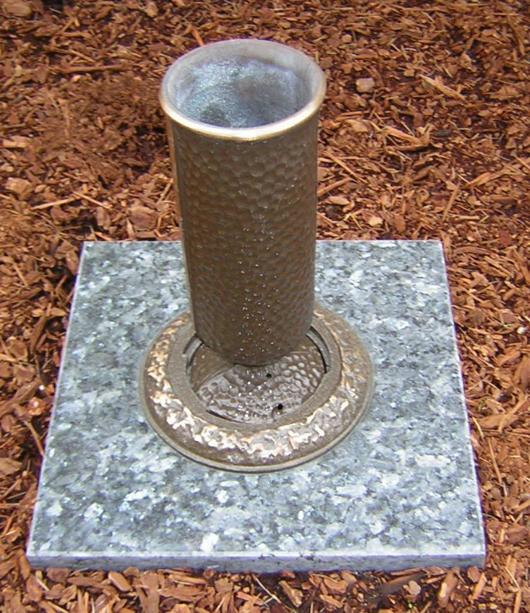
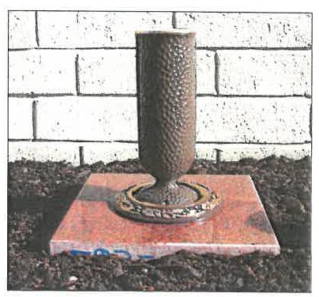

Cast zinc with a gray finish. It's the simplest vase we offer and the one we keep in stock here. Zinc holds up well, but it's softer than bronze and won't last as many lifetimes.

Cast bronze by Matthews. The Veterans version carries a cross on the vase and a ring of stars around its base. The Grecian version has a plain ring.

The Doric vase has a hand-hammered texture, set in either a matching hammered ring or a plain Grecian ring.

The hammered Doric vase in the Floral Innocence ring, a ring of cast flowers around the base. It's the top of our bronze range.
Prices are for the vase alone. The block, its installation and sales tax are added in Section 4.
The block is made by Pacific Coast Memorials, the same Everett company that makes our granite markers, so most families simply match it to the granite they chose for the marker and the color is settled along with the marker. Granite comes in many colors and grain types, and some even sparkle in the sun. It's priced in color groups, and colors that carry added import tariffs are priced separately.
| 12×12×4 vase block, by color group | Block |
|---|---|
| Group 1, non-tariffed Cloud White, Misty Pink, PC Violet | $525 |
| Group 1, tariffed Cascade Gray, Classic Gray | $630 |
| Group 2 Absolute Black, Barrell Gray, Blue Pearl and others | $800 |
| Group 3 Balmoral Red, Barre Gray, Cherrywood and others | $965 |
| Group 4, non-tariffed American Bouquet, Gorman Green and others | $1,210 |
| Group 4, tariffed Crystal White, Emerald Pearl | $1,450 |
Setting the block and vase is $175, the same for every color. The Granite Marker Sizes and Colors guide shows the colors in each group.
| Vase | Least costly block | Most costly block |
|---|---|---|
| Gray Zinc | $1,120.56 | $2,141.76 |
| Bronze, Grecian or Veterans | $2,252.16 | $3,273.36 |
| Bronze Doric, Hammered or Grecian ring | $2,323.92 | $3,345.12 |
| Bronze Doric, Floral Innocence ring | $2,368.08 | $3,389.28 |
The left column uses a Group 1 non-tariffed block and the right column a Group 4 tariffed block, so every other color falls between the two. Sales tax of 10.4% applies to the vase, the block and the installation. I'll put the exact figure for your colors in writing before anything is ordered.
Bronze is mostly copper. The bronze vases are solid castings by Matthews, and bronze is a copper alloy. Copper prices are at record highs, and the cost of every bronze casting follows them. That's the biggest single reason a bronze vase costs what it does today.
Bronze lasts for generations. Pacific Coast Memorials describes bronze as an extremely durable copper-based alloy, and it doesn't rust. Zinc costs far less and outlasts galvanized metal, but by their own description its life is centuries shorter than bronze. Families who choose bronze buy it once.
The block is memorial-grade granite. Pacific Coast Memorials, a fifth-generation family company in Everett, cuts each block, polishes the top and drills it for the vase. As they put it, the price of granite depends on its size and the type of granite. Every vase block here is the same size, so the color is what moves the price, and some colors carry added import tariffs.
It's backed by a warranty. Pacific Coast Memorials will replace or refurbish, at no cost to you, any stone part that cracks or breaks down from climate or season. Normal weathering stains aren't covered.
It's set to stay. The price includes our crew setting the block level so it stays put and the mowers can pass over it for as long as the cemetery stands.
The gray zinc vase on a Group 1 block comes to $1,120.56 with tax, about half the cost of bronze. It's a real, permanent vase that meets every cemetery rule. Plenty of families start there.
Call or email me with any questions, and I'll put the exact figure for your marker's granite in writing.
Martice Morrison · Family Service and Advanced Planning Director · (206) 445-9794 · mmorrison@bonneywatson.com